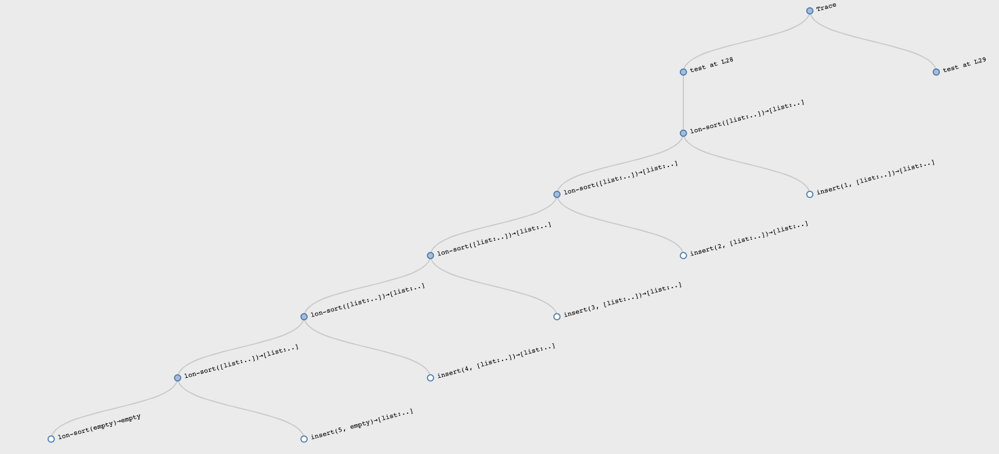
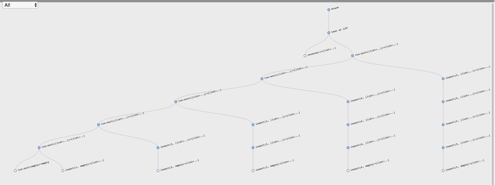
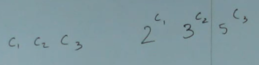

Accelerated Introduction to Computer Science
Для кого курс и что в итоге будет знать студент? Ответ автора на Quora.
См. readme курса.
Всего 36 лекций, по три в неделю: пн, ср, пт.
Материалы курса
- Страница курса на сайте Брауновского университета.
- Записи лекций.
- Examplar — помогает писать хорошие тесты. См. видео.
- Домашки к лекциям.
Введение в Pyret и курс
Студенты в подготовительном курсе изучали HtDP и Racket. TODO: добавить ссылки.
Pyret студент по большей части изучает сам, делая домашки. В курсе используются далеко не все фичи языка.
Язык программирования — это мир, который кто-то придумал. В разных языках — разные правила. Нет никаких незыблемых законов, как в физике, всё решает создатель языка. И здесь нормально не знать ответ «как это работает» заранее. Эксперимент, документация — так можно научиться.
В CS часто встречаются ситуации, когда нужно просто смириться с чьим-то решением и играть по существующим правилам. Пример — в Pyret вокруг математических операторов нужны пробелы:
3 + 3 # вокруг плюса нужны пробелы
3+3 # ошибка
Однако, курс не про это. Курс про фундаментальные идеи, которые ещё не скоро устареют.
В Pyret можно создавать свои типы данных, помимо уже имеющихся в языке чисел, строк и пр.
data Insect:
| spider(web) # spiders could have a web
| centipede(name) # cent. could have a name
end
# Для примера тип данных «список».
# Список уже определён в Pyret, при запуске будет ошибка.
data List:
| empty
| link(f, r)
end
fun name(i):
doc: "Returns a name of an insect."
cases (Insect) i:
| spider(w) => "don't know"
| centipede(n) => n
end
where:
name(i1) is "don't know"
name(i2) is "Millie"
end
fun length(l):
doc: "Returns the length of a list."
cases (List) l:
| empty => 0
| link(f, r) => 1 + length(r)
end
where:
length(empty) is 0
length([list: 33]) is 1
length([list: 1, 2, 3]) is 3
end
casesнужен для обработки вариантов составных типов данных (to pull apart data types);ifиask— для условных конструкций.
HtDP-рецепты
В районе 14-й минуты Шрирам рассказывает, откуда взялись рецепты в HtDP.
Когда студенты приходили за подсказками к TA, были проблемы с пониманием, где конкретно была ошибка. Студент не мог объяснить, на каком этапе решения задачи он застрял, потому что не было формального разделения процесса решения задачи на шаги.
Рецепты позволили формализовать процесс решения задач и тем самым позволили студентам задавать более конкретные вопросы и лучше объяснять трудности. Теперь они могли сказать, например, так: я записал сигнатуру, назначение, тесты и не могу придумать заглушку (см. рецепт для функций). Теперь можно провести диагностику проблемы, когда студент приходит за помощью.
По рецепту нужно записать примеры/тесты до реализации. Примеры иногда требуют достаточно много времени и, если дедлайн поджимает, то тянет начать сразу фигачить. Но это не работает. Даже если тесты занимают 80% всего времени, то это нормально. Это правильный способ мышления. Тесты позволяют понять задачу и структурировать всё в голове, чтобы родить хорошее решение.
На этом курсе студент может решать задачи как хочет. Но если он придёт за помощью к TA, то ему нужно будет следовать рецептам, потому что TA будут проводить диагностику по шагам, начиная с самого первого.
Мышление
Курс учит инженерии, а инженер анализирует задачи и оценивает способы реализации. Каждая домашка будет содержать задачу Ферми. Эти вопросы не имеют верного ответа, но сам процесс поиска ответа полезен и может показать способности человека к нужному виду мышления. Решая такие задачи мы тренируем инженерный способ мышления.
Решение не надо точно высчитывать. Достаточно обозначить необходимые данные, предложить способ решения и прикинуть результат.
Такие задачи часто спрашивают на собеседованиях.
Материалы
- Видео на винте —
01_Wed 9_5_18.ts, видео на сайте Брауна — Wed 9_5_18. - Домашка DocDiff, 2 дня на решение.
- Домашка локально DocDiff, 2 дня на решение.
Прочее
На лекциях запрещены ноутбуки. Исследования показывают, что студенты не столько сами отвлекаются в ноуты, сколько отвлекают других. Ладно сам тупишь сидишь, но другие это видят и отвлекаются.
Шрирам уже 10 лет уже преподает CS19.
Rainfall Problem и ФП
Лекция начинается с задачи:
Напишите программу, которая получает на вход массив чисел и возвращает среднее значение чисел больше нуля, которые попадаются до -999.
Write a program that takes a list/array of numbers and produces the average of non-negative numbers that occur before (an optional)
-999.Ignore I/O - just take a list/array as input. Use any language you wish.
Эта задача известна в обучении CS, её называют Rainfall problem.
Пример: у нас есть сенсор, который считает количество осадков. Иногда его глючит и он записывает отрицательные значения. Это ок, мы их просто игнорируем. Когда его выключают, он посылает значение -999, а то, что идёт потом нам не интересно, потому что это шум.
Rainfall Considered Harmful
Начиная с семидесятых эту задачу использовали для проверки навыков студентов. Около 70% решали её с ошибками, писали неуместный код и т.д.
Эта задача — тест на декомпозицию.
Декомпозиция:
- отсечь список до -999
- убрать отрицательные значения
- просуммировать оставшиеся элементы
- посчитать количество элементов
- посчитать среднее
- обработать исключительные ситуации: пустой список, только отрицательные, только -999.
Функции для абстракций
Шрирам показал видос про абстракцию с помощью функций на циклах. Студент ожидаемо задал вопрос про скорость вычисления: что быстрее, for или map. Шрирам ответил: мы не можем ответить на этот вопрос до тех пор, пока не узнаем, что делает компилятор. Например, в Хаскеле функции mpa/filter/fold становятся оптимизированными циклами при компиляции (см. deforestation).
Использовал переменную с именем sentinel (часовой, страж) (см. район 28-й минуты). Это устоявшаяся терминология
map/filter/fold в Хаскеле преобразуются в циклы, это называется deforestation.
Материалы
- A Challenge to Computing Education Research: Make Measurable Progress, про rainfall problem.
Списки, сортировка, контракты
Задача: отсортировать список чисел от меньшего к большему. Использовать только то, что знакомо, без методов стандартной библиотеки.
Примеры:
check "sort list of numbers in ascending order":
[list: ] is [list: ] # базовый случай
[list: 3, 3, 3] is [list: 3, 3, 3] # убедится, что ничего не потеряем
[list: 1, 2, 3] is [list: 1, 2, 3] # что ничего не сломаем
# ...
end
Шаблон
Мы работаем с рекурсивной структурой дынных «список чисел» (List of Numbers). Вот её определение:
data LoN:
| empty => ...
| link(f, r) => ...
end
В языке уже есть List<Number>, но чтобы с ним работать, мы должны понимать, как он устроен внутри.
На основе структуры данных мы можем сформировать шаблон для работы с ней. Зачем нужен шаблон? Затем, что все функции для работы со структурой данных будут выглядеть похожим образом. Если мы составим общий паттерн для функции, которая обрабатывает структуру данных (все возможные кейсы), мы получим основу для любой задачи, которая использует эту структуру данных.
Template is an attempt to extract as much code as we can out of the data definition even before we know what problem we're trying to solve.
Шаблон функции для работы со списком чисел:
fun lon-fn(l :: List<Number>) -> ...:
cases(List) l:
| empty => ...
| link(f, r) =>
...f...
...lon-fn(r)...
end
end
Мы не знаем, что эта функция будет возвращать и как конкретно она будет обрабатывать возможные варианты списка чисел, поэтому ставим ..., которые будут заполняться в процессе решения конкретной задачи.
В случае empty мы уже ничего не можем вытащить из определения данных (всё, пусто), поэтому сразу .... В случае link(f, r) есть ещё f и r.
f — уже конкретное значение, мы можем с ним работать, отображаем это как ...f.... r — это такой же список чисел, как исходный l и для него шаблон может повториться заново (т.к. структура данных рекурсивная).
Прелесть составления шаблона в том, что мы получаем код без раздумий, просто анализируя определение типа данных, независимо от задачи, которую надо решить. И этот код частично или полностью может быть использован при составлении любой функции, которая работает со списком чисел.
Это работает везде: определение данных рулит процессом их обработки (центральная идея ООП).
You drive the structure of the program from the structure of the data. This is the central idea of the object-oriented programming.
Эта идея по-разному реализована в ООП-языках и функциональных языках, но она одна.
Шаблон дает подсказку. Если задача — написать функцию, которая получает список чисел и тупо возвращает 3, то вообще cases не нужны. Если задача — посчитать количество элементов, то во втором кейсе значение f не важно, вместо него будет всегда 1. Но шаблон показывает нам то, что у нас есть в арсенале исходя из определения данных (inventory): вот из этих штук ты можешь составить решение, используй то, что нужно.
Структурная рекурсия
Сортировка в lon-sort.arr — пример структурной рекурсии (structural recursion). Структурная рекурсия получается, когда само определение типа данных (списка) говорит, на чем надо запускать рекурсию (rest). Структурная рекурсия гарантированно завершится.
Индуктивное программирование
Мы предполагаем, что функция sort сортирует список чисел по возрастанию и делаем следующий шаг. Мы предполагаем, что функция insert вставляет число в нужное место в отсортированном списке и делаем следующий шаг. Это как индукция в математике.
Структура данных (список) сконструирована из тех же составных частей, на которые мы её разбиваем в шаблоне. Мы программируем индуктивно, как в математике доказывают по индукции. Индуктивная структура данных — индуктивное программирование.
Контракты с уточнёнными типами
В аннотации типов можно использовать предикаты, чтобы добавить ограничения для значений типа. Например, чтобы показать, что List<Number> должен быть отсортирован, нужно создать функцию-предикат is-sorted и добавить её в аннотацию типа через %:
fun insert(n :: Number, lst :: List<Number>%(is-sorted)) -> List<Number>%(is-sorted):
#...
end
Предикат будет запущен в рантайме на значении, проверит его на соответствие и покажет ошибку, если они не подходят:

Такие типы с прикреплёнными предикатами называются refinement type.
Тип данных List в языке далеко не всегда хорошо отображает предметную область задачи. Например, бессмысленно искать среднее арифметическое или максимальное значение в пустом списке. Правильный подход к такой задаче — решать её на уже ограниченном множестве. Так мы отсекаем все исключительные ситуации и может просто о них не думать.
Мы будем считать, что функции average и max могут быть объявлены только для не пустых списков. Для этого можно подготовить новый тип NonEmptyList, который может содержать либо одно значение, либо такой же NonEmptyList:
data NEList:
| one(n :: Number)
| ne-link(first :: Number, rest :: NEList)
end
fun max(l :: NEList) -> Number:
# ...
end
Либо использовать уточнённый тип:
fun lon-max(l :: List<Number>%(is-non-empty)) -> Number:
# ...
end
fun max(l :: List<Number>%(is-non-empty)) -> Number:
# ...
end
Measuring the performance of programs
04_Fri_9_14_18.ts
Text: Predicting Growth
В этом курсе в качестве показателя перформанса измеряется только время.
Возьмём функцию length :: List<T> -> Number. Мы хотим измерить её производительность (эффективность, быстродействие, performance). Результат какого типа нам нужен? Число? Но это не скорость выполнения. Мы измеряем не производительность функции length для конкретного списка списка, состоящего из нуля, трёх, семи и др. количества элементов, мы измеряем производительность самой функции.
Показатель производительности можно представить в виде функции от количества входных элементов (размер списка), которая возвращает количество шагов, которые должна совершить функция length, чтобы выдать результат.
Простая функция length:
fun length(l :: List<T>) -> Number:
cases (List) l:
| empty => 0
| link(f, r) => 1 + length(r)
end
Big-O for sorting
04_Fri_9_14_18.ts
Reading: https://papl.cs.brown.edu/2019/predicting-growth.html
Написали функцию sort, как в 03/lon-sort.arr и считали её вычислительную сложность (O-большое).
При вычислении O нужно учитывать только пессимистические сценарии. The worst case assumption. Например, при анализе if/else нужно выбирать то, что требует бОльшего количества шагов.
Оптимизация, структурная и генеративная рекурсии
Новый, экспериментальный редактор (может глючить): https://cpo.herokuapp.com/editor
В новом редакторе есть фичи: трейсинг и тайп-чекинг. Трейс показывает выполнение кода в виде графа и можно получить некоторые инсайты.
Например, так выглядит сортировка уже отсортированного списка sort([list: 1, 2, 3, 4, 5]):

Каждый раз вызов insert происходит ровно 1 раз и чётко видно линейную (linear) зависимость.
А так выглядит худший случай — сортировка reversed-списка sort([list: 5, 4, 3, 2, 1]):

С каждой итерацией прибавляется новый элемент и каждая последующая вставка insert выполняется дольше. Это квадратичный алгоритм.
Рецепты/шаблоны как прототипы решений
В HtDP рецепты нужны для того, чтобы получить интуитивно подходящее для структура дынных рабочее решение. Но не алгоритмически оптимальное решение.
Зачем такое решение вообще может быть полезно? Затем, что мы максимально быстро можем проверить свою гипотезу. Когда задача сложная, то нам не стоит закапываться в оптимизацию до тех пор, пока мы не проверим свой алгоритм, свою гипотезу о верном решении. Но решив задачу максимально быстро и интуитивно и проверив её на тестовых данных мы можем спокойно оптимизировать решение уже зная, что оно рабочее.
Test Oracle. Проектируя сложную систему стоит сначала создать более простую, проверить её и на её основе продолжать разрабатывать сложную.
Пример: математик придумал формулу для каких-то ядерных вычислений. Она относительно небольшая. Программист превращает эту формулу в код, они с математиком проверяют корректность. Потом этот код дописывается так, чтобы он работал на большом вычислительном комплексе, кода становится во много раз больше, он учитывает массу разных штук (протоколы, параллельные вычисления и пр.) но тот, первый, простой вариант программы позволяет проверить итоговую реализацию на корректность.
Оптимизация алгоритма сортировки
В 1959-м году Тони Хоар придумал quicksort:
- Берём первый элемент списка
f— pivot element (опорная точка); - Разделяем оставшийся список на два: первый меньше
f, второй большеf; - Сортируем каждый список
- Объединяем оба списка в один с
fпосередине.
См. lon-quicksort.arr.
В решении задействовано несколько функций: sort, all-lt, all-gte, combine. Без тестов для каждой функции мы не сможем чётко изолировать проблему, если она возникнет. Чтобы показать это, Шрирам нарочно упустил >= в одной из вспомогательных функций. И ещё он в all-gt вызывал all-lt, вместо рекурсивного вызова all-gt. Проблема копипаста.
Есть категория проблем (багов), которые в принципе не могут произойти при использовании HtDP-рецептов.
Когда мы пишем алгоритм и замечаем, что написали сами то, что уже есть в языке, надо использовать то, что в языке. Потому что оно более оптимально. Например, all-lt и all-gte — это фильтры и лучше юзать filter.
Часто тем, кто пришёл из императивного стиля хочется добавить флаг — дополнительный параметр в функцию, который будет говорить, надо ли делать сравнение через < или >. Это ок для школы, но в реальной жизни стоит помнить, что таких опций может быть несколько:
If you have a procedure with 10 parameters, you probably missed some.
— Alan Perlis
Выход — передавать функцию параметром, которая сама решит, что надо делать. Так мы получим reusable abstraction. В 4-й домашке это есть.
Примеры такой абстракции — filter, map, fold: мы сделали функции, которые отражают концепцию, а ты просто объясни, как именно этот концепт реализовать на твоей коллекции.
Нужно использовать структуру данных (список в случае сортировки) так, чтобы получалось максимально простое, наивное решение, которое не надо додумывать.
В случае с all-lt и all-gte мы генерируем новые проблемы. Какой длины получится список all-lt(pivot, r)? Если длина исходного списка равна k, то длина r равна k - 1, да? Или нет? А зависит от того, строгое или не строго неравенство используется. Часто all-lt/all-gt запускают не на r, а на исходном списке l (ну список же) и получают бесконечную рекурсию. Вот таких вопросов можно избежать.
Если взять задачу и решить её по рецепту через структурную рекурсию, то этих вопросов не будет. Нам не надо думать, завершится ли выполнение, правильно ли мы сравнили и т.д. Структурная рекурсия вытекает из самой структуры данных, с которой мы работаем. Оптимизируя мы уже используем generative recursion. Об этом есть параграф в HtDP.
Структурная рекурсия не генерирует новых данных в процессе выполнения. Нам не надо думать о них вообще: правильный ли алгоритм генерации этих данных. Генеративная рекурсия, наоборот, генерирует их (новые списки с элементами больше/меньше pivot, сам pivot, итоговый список). И при генеративной рекурсии надо убеждаться в правильности решения каждой подпроблемы.
Quicksort плохо работает на уже сортированных списках. Мы получаем квадратичную зависимость. merge sort дает (n log n)
Mutual recoursive data definitions, trees
Guest lecture.
Data definitions
List of numbers data definition:
data NumList:
| empty
| link(first :: Number, r :: NumList)
end
What is data definition for a link?
На этой лекции разбирается определение структур данных, которые не являются линейными цепочками, как списки.
Будем обсуждать деревья. В частности, family trees. Вместо first будет имя человека, вместо rest будет два биологических родителя.
Just start coding
Определим данные для человека:
data Person:
person(name :: String, parent1 :: Person, parent2 :: Person)
end
Сразу же напишем функцию, которая работает с этим определением. Пусть она считает количество людей в дереве, которое начинается с какого-то человека (корень).
fun count-people(p :: Person) -> Number:
cases(Person) p:
| person(name, p1, p2) =>
1 + count-people(p1) + count-people(p2)
end
end
Написали функцию, которая не работает. Потому что структура данных не завершена. А следовали бы рецепту, то на примерах сразу бы увидели, что у нас есть эти проблемы.
Just follow the recipe
Теперь сделаем нормально:
data Person:
| Unknown
| person(name :: String, parent1 :: Person, parent2 :: Person)
end
# Examples
petya = person("Petya", Unknown, Unknown)
masha = person("Masha", Unknown, Unknown)
ivan = person("Ivan", petya, masha)
sveta = person("Sveta", Unknown, Unknown)
vasya = person("Vasya",
ivan,
person("Sveta", Unknown, Unknown))
fun count-people(p :: Person) -> Number:
cases(Person) p:
| Unknown => 0
| person(name, p1, p2) =>
1 + count-people(p1) + count-people(p2)
end
end
check:
count-people(vasya) is 5
end
Похоже на список, но на каждом уровне (поколении) происходит два рекурсивных вызова.
Теперь определим тип данных для генеалогического древа, где верхний узел — человек, а остальные узлы — его дети и дети его детей:
John
|
-----------------
|
Jack ...
|
---
Моя версия:
data Tree:
| person
# ошибка, у Person из определения выше есть родители, а не дети
| tree(person :: Person, child :: Tree, child :: Tree)
end
Из лекции, один из способов представить эти типы:
data Person:
| person(name :: String, children :: ChildList)
end
data ChildList:
| NoChildren
| child(c :: Person, rest :: ChildList)
end
sveta = person("Sveta", NoChildren)
vasya = person("Vasya", child(sveta, NoChildren))
В определении Person нет базового случая (когда дети пустые). Но он уже и так доступен, можно проверять список детей на пустоту.
Эти определения связаны друг с другом. ChildList в себе использует Person и наоборот. Циклическая зависимость. Mutual recursion between data types.
Напишем функцию, которая считает всех детей человека, включая его самого:
fun count(t :: Person):
cases(Person) t:
| person(n, c) =>
cases(ChildList) c:
| NoChildren => 0
| child(p, r) => 1 + count(p) # but how to handle `rest`?
# we need a way to handle this mutual recursion somehow...
# We need a new function for counting `ChildList`s.
# Separation of concerns.
end
end
end
Разделим ответственность, вынесем в отдельную функцию подсчёт количества детей:
data Person:
| person(name :: String, children :: ChildList)
end
data ChildList:
| NoChildren
| child(c :: Person, rest :: ChildList)
end
sveta = person("Sveta", NoChildren)
masha = person("Masha", child(sveta, NoChildren))
vasya = person("Vasya", child(masha, NoChildren))
fun count(t :: Person):
cases(Person) t:
| person(n, cs) =>
1 + countList(cs) # теперь за подсчёт детей отвечает `countList`
end
end
fun countList(cs :: ChildList):
cases(ChildList) cs:
| NoChildren => 0
| child(f, r) =>
1 + countList(r) # something suspicious
end
end
check:
count(vasya) is 3
count(sveta) is 1
end
Вроде работает. Но если у ребёнка будет ребёнок, то он не посчитается. Мы имеем взаимно-рекурсивные определения данных, но в функции countList это не отражено! Мы не вызываем count из countList, а надо её вызывать на отдельном человеке, чтобы посчитать и его детей.
Так надо:
fun countList(cs :: ChildList):
cases(ChildList) cs:
| NoChildren => 0
| child(f, r) =>
count(f) + countList(r)
end
end
::: При обработке взаимно рекурсивных типов данных соответствующие функции также должны иметь взаимно рекурсивные вызовы. :::
Итог:
data Person:
| person(name :: String, children :: ChildList)
end
data ChildList:
| NoChildren
| child(c :: Person, rest :: ChildList)
end
sveta = person("Sveta", NoChildren)
masha = person("Masha", child(sveta, NoChildren))
vasya = person("Vasya", child(masha, NoChildren))
fun count(t :: Person):
cases(Person) t:
| person(n, cs) =>
1 + countList(cs)
end
end
fun countList(cs :: ChildList):
cases(ChildList) cs:
| NoChildren => 0
| child(f, r) =>
count(f) + countList(r)
end
end
check:
count(vasya) is 3
count(sveta) is 1
end
Sets
Set в Pyret:
[set: 1, 2, 3]
Два существенных отличия множеств (sets) от списков:
- в списке элементы расположены в определённом порядке, в сете — нет;
- в сете не может быть повторений:
[set: 1, 2, 3]такой же, как[set: 1, 2, 3, 1].
Шрирам про то, что в математике всё просто, а в программировании не очень, но оно тоже проникает в математику и вообще везде:
Software eats everything and makes everybody's life worse. No math is gonna suck as much as software pretty soon.
Примеры коллекций данных, где порядок не важен: список покупок (не надо покупать молоко 2 раза, надо подойти и купить его 1 раз сколько надо).
Множества гораздо более фундаментальные, чем списки или массивы.
Примеры операций над множествами:
- insert ::
T, Set<T> -> Set<T> - union ::
Set<T>, Set<T> -> Set<T> - is-in ::
T, Set<T> -> Boolean - size ::
Set<T> -> Number - ...
Задача 1 в классе: implement sets using lists на примере функции size.
size может выдавать размер списка, который может быть уже без повторений:
fun size1(l):
l.length()
end
size может принимать любой список, удалять из него повторения и уже потом возвращать результат:
fun size2(l):
unique(l).length() # weed out non unique elements before counting
end
Задача 2: напишите функцию insert, которая работает также с сэтами через списки.
# считаем, что size будет отвечать за повторения
insert = link # по сути добавляем в начало списка элемент
# вставляем только если такого элемента в списке ещё нет
fun insert(el, l):
if l.member(el):
l
else:
link(el, l)
end
end
Нужно принимать решения о структурах данных (типах) и функциях, которые их используют. Это иллюстрация того, с чем всегда приходится сталкиваться.
Representation Invariant
Invariant is a thing that is always true.
- size1 полагается на инвариант в структуре данных
Set.insertиunion, формирующие нове сеты, должны выполнять проверку и возвращать только списки с уникальными элементами. size2не полагается на то, что список уникальный. Поэтомуinsertиunionмогут ничего не проверять, а просто возвращать список с добавленным элементом или объединённый список. Здесь нет инварианта.
Эти подходы имеют разные big-O complexity. Продолжим рассматривать insert и size.
TODO: прочитать growing complexity, разобрать big-o и пересмотреть.
Sets II: Binary Tree, Binary Search Tree, Sets and (log n) complexity
Видео: 09_Wed_9_26_18.ts
На прошлом занятии разбирали 2 реализации сетов через списки с разной эффективностью функций insert и size:
- linear/linear
- constant/quadratic
Причём оба эти варианта типа Set реализованы через List и каждый под капотом имеет свою зависимость от этой реализации. Каждый вариант эффективен в зависимости от конкретной задачи. linear/linear больше подойдёт для повседневного использования на небольших множествах. constant/quadratic будет более полезной, когда нужно вставлять быстро, а узнавать размер очень-очень редко (например, логи писать).
Представление данных (data representation) может быть разным и лучше/хуже подходить для реализации конкретных задач. И даже нормально изменять это представление для разных типов обработки (разных вычислительных задач).
Например, каждый раз, когда мой лог превышает определённый размер, я буду выполнять чистку данных и перегонять её из raw data в реляционную модель из MongoDB в PostgreSQL. Этот размер (предел, порог, threshold) можно вычислить экспериментальным путём, вычислив допустимую эффективность. Например, 100 000 записей мне ок обработать квадратичным алгоритмом, а миллион уже нет. Поэтому буду дробить по сто тысяч.
Шрирам советует читать блоги. Там можно найти примеры применения алгоритмов из книжек в реальной разработке и вообще много чему научиться.
Логарифмическая зависимость лучше линейной, она каждый раз разбивает проблему пополам + константа.
Intuition: Logarithm of a number is essentially how many digits number has.
См. дополнительно про логарифм:
- https://www.quora.com/Is-there-a-trick-to-find-how-many-digits-a-certain-exponent-will-yield
- https://cnx.org/contents/ywnwlJeA@1.20:njDsQlIO@7/Essential-Mathematics
- https://en.wikipedia.org/wiki/Logarithm
- https://www.reed.edu/academic_support/pdfs/qskills/logarithms.pdf
Если я умножу данные на 10, то мой логарифм увеличится на 1. На 100 — на 2. На миллион — на 6. Логарифмические алгоритмы очень эффективны.
Если пришло в миллиона раз больше посетителей, то достаточно оплатить 6 дополнительных серверов на Амазоне.
Сет может быть более эффективным, чем log n.
Если хранить данные в отсортированном виде, то можно спокойно опускать часть данных. Например, если нужно вставить число в упорядоченное множество чисел.
Если мы работаем не с числами, то нужно каким-то образом свести данные к числам.
Gedel Numbering
Как перевести строку в число?
Гёдель придумал решение: мы можем использовать простые числа как базу, а код букв как степень. Каждое число имеет одно произведение с простыми числами.

Здесь c1, c2 и c3 — числовое представление символов в строке.
Это сложно вычислять, но это отправная точка: такое решение может существовать. Каждый объект в памяти ЭВМ имеет свой адрес и это его числовое представление, на основе адреса также можно упорядочивать значения.
Binary Trees
Все левые значения меньше, чем правые. Меньше в каком-то искусственном представлении, которое нам удобно. Если значение равное корню, то оно и есть корень:

Data representation:
data BinTree:
| leaf
| node(value :: Number, left :: BinTree, right :: BinTree)
end
Одна из проверок на состоятельность выбранной модели данных — можно ли с помощью этой структуры представить все возможные варианты? В данном случае деревья разных размеров: пустое, дерево с одним элементом, с сотней элементов...
Тип данных «бинарное дерево» никак не ограничивает то, что именно должно лежать в левом и правом потомке. Binary Search Tree уже ограничивает: левое значение должно быть меньше корня, правое — больше. Проверять можно через %is-bst, выполняя рекурсивный обход и убеждаясь, что все значения слева меньше, чем предыдущие корни и что значения справа больше. Дорогая операция, для тестов ок, для продакшена излишне.
См. следующую лекцию, BST не всегда даёт логарифмическую зависимость, нужно его сбалансировать.
Balancing BSTs
Видео: 10_Fri_9_28_18.ts
На прошлой лекции мы рассмотрели BT и BST, и хотели логарифмическую зависимость при работе со множествами. log n или:
$$ T(k) = T(k/2) + c $$
Худший случай для работы с BST — это одна ветка (когда получается простой список, BST degenerates to give a list). Значения только левые или только правые (сортированные по возрастанию или убыванию):

И в этом случае мы не получим логарифмическую зависимость.
Last class is basicly a giant piece of trolling.
Нам нужно Balanced Binary Search Tree.
BBST ← BST ← BT, мы можем использовать функционал для BT на BST и на BBST. Но insert для BBST, чтобы он был оптимальным, должен быть другим.
При работе с деревьями мы обращаем внимание на следующие параметры:
- размер дерева (количество узлов в дереве)
- высота дерева (какая ветка дерева содержит больше всего узлов)
k может быть размером или высотой. Более наглядно рассматривать высоту, будем рассматривать её.
Высоту BT может быть:
- 1 если нет дочерних веток;
- или как
max(left, right + 1), если ветки есть.
Отсюда можно дать определение (не до конца точное) сбалансированному дереву: его левые и правые ветки на всех уровнях имеют одинаковую высоту либо отличаются на 1.
Главная наша задача — разобраться с insert. Функция должна принимать BBST и возвращать BBST:
insert(tree :: BBST, el) -> BBST:
Можно взять старый insert, который возвращает почти BBST и пропустить то, что он возвращает через балансировку:
old_insert(tree :: BBST, el) -> ~BBST:
balance(olomst_bbst :: ~BBST) -> BBST
Таким образом композиция old_insert и balance даст нам желаемую функцию insert, которая принимает сбалансированное дерево поиска и возвращает такое же (сохраняет инвариант).
~BBST тип, это:
- BST;
- либо BBST, в котором расхождение может быть не на 1, а на 2.
Если вызывать balance после каждой вставки и чинить ~BBST, чтобы получалось BBST, то наша задача будет решена:
# alias for almost balanced binary search tree
type ~BBST = BBST%(is-off-by-2)
balance(~BBST) -> BBST
Рассмотрим вставку в левую ветку, сбалансированная высота которой — k и допустимая высота: k-1 и k+1. Случаи, когда высота равна k или k-1 нам подходят, мы просто можем вставить. Если высота k+1, то при вставке дерево получится не сбалансированным и этот случай надо обрабатывать.
Infinity I: Lazy Sequences (infinitely long data)
Video: 11_Mon_10_01_18.ts.
Функции в CS (например, y(x) = x + 5):
- Позволяют создавать параметризированные выражения.
- Позволяют задерживать вычисление тела до тех пор, пока не будет предоставлен параметр
x. Задержать вычисление до тех пор, пока мы не захотим его выполнить.
Orthogonal means completely independent.
Функция может быть выполнена сразу же. Так делаются байндинги. Например, let-expression фактически выполняется так:
(let ([x 3])
(+ x x))
;; Under the hood `let` works like this
((λ (x)
(+ x x)) 3)
Задача let — дать имя значению 3, выполнить выражение с этим именем и исчезнуть.
В такого рода функциях мы не используем возможность задержать вычисление.
А чем может быть полезна функция без параметров?
Дальше разговор пойдёт про откладывание вычислений. Например, для формирования больших деревьев, где нужно откладывать формирование всего дерева.
Recursive binding in Pyret:
rec ones = link(1, ones)
Pyret syntax for a lambda:
# Two equal constructions:
{(x): x + 3}(3) # shorter
(lam(x): x + 3 end)(3)
Пример потока (stream, lazy list):
data Lz<T>:
| lzlink(e :: T, r :: ( -> Lz<T>))
end
fun fst<T>(s :: Lz<T>) -> T:
s.e
end
fun rst<T>(s :: Lz<T>) -> Lz<T>:
s.r()
end
fun take<T>(s :: Lz<T>, n :: Number) -> List<T>:
if n == 0:
empty
else:
link(fst(s), take(rst(s), n - 1))
end
end
# Stream of ones: 1, 1, 1, ...
rec ones =
lzlink(1,
{(): ones})
fun natsfrom(n :: Number):
doc: "Returns a stream of natural numbers."
lzlink(n, {(): natsfrom(n + 1)})
end
# Stream of natural numbers from 0: 0, 1, 2, ...
nats = natsfrom(0)
check:
take(ones, 5) is [list: 1, 1, 1, 1, 1]
take(nats, 5) is [list: 0, 1, 2, 3, 4]
end
Lists are finite, streams are infinite.
Thunk is a function with no parameters, like lambda in stream above. Thunk is a lambda with no arguments.
Индукция и программирование по индукции не работает на потоках, потому что нет базового случая. Тут работает коиндукция.
Примеры мап-функций для одного и двух потоков:
fun lzmap<A, B>(
fn :: (A -> B),
s :: Lz<A>) -> Lz<B>:
lzlink(
fn(fst(s)),
{(): lzmap(fn, rst(s))})
end
fun lzmap2<A, B, C>(
fn:: (A, B -> C),
s1 :: Lz<A>,
s2 :: Lz<B>) -> Lz<C>:
lzlink(
fn(fst(s1), fst(s2)),
{(): lzmap2(fn, rst(s1), rst(s2))})
end
check:
take(lzmap({(n): n + 111}, nats), 5) is [list: 111, 112, 113, 114, 115]
take(lzmap((_ - 1), nats), 5) is [list: -1, 0, 1, 2, 3]
end
Базового случая нет, но анонимная функция (thunk) предотвращает бесконечную рекурсию.
С помощью lzmap2 можно сгенерировать бесконечную последовательность чисел Фибоначчи:
rec fib-seq =
lzlink(0,
{(): lzlink(1,
{(): lzmap2({(
a :: Number,
b :: Number):
a + b},
fib-seq,
rst(fib-seq))})})
# 0 1 1 2 3 5 ...
# 0 1 1 2 3 ...
# 1 2 3 5 8 ...
check:
take(fib-seq, 10) is [list: 0, 1, 1, 2, 3, 5, 8, 13, 21, 34]
end
Материлы
- 13. Functions as Data, PAPL.
Infinity II: Animations (infinitely long programs, part 1)
Video: 12_Wed_10_3_18.ts.
Термины Model (или State) — основа программы/системы. Её самые главные данные.
Модель отделена от представления, потому что так гораздо проще:
- меняющиеся данные вынесены отдельно;
- легко делать тестирование, что очень сложно, если бы просто менялись картинки (функция не Model->Img, а Img->Img);
- дебажить проще: логика в модели дебажится отдельно, рендеринг — отдельно.
Это MVC, роль контроллера выполняет встроенная функция interact.
Пример интерактивной программы:
include reactors
include image
UFO = image-url("https://cs.brown.edu/~sk/tmp/ufo.png")
BG = rectangle(400, 400, "solid", "gray")
INIT = { x: 10, y: 10 }
type Pos = { x :: Number, y :: Number }
fun update(p :: Pos) -> Pos:
{ x: p.x + 3,
y: p.y + 5 }
where:
update({x: 2, y: 3}) is {x: 5, y: 8}
end
fun drawer(p :: Pos) -> Image:
place-image(UFO, p.x, p.y, BG)
end
fun stopper(p :: Pos) -> Boolean:
(p.x < 0) or (p.x > 200) or (p.y < 0) or (p.y > 300)
end
fun typer(p :: Pos, k :: String) -> Pos:
ask:
| k == "up" then: {x: p.x, y: p.y - 10}
| k == "down" then: {x: p.x, y: p.y + 10}
| otherwise: p
end
end
r = reactor:
init: INIT,
on-tick: update,
to-draw: drawer,
stop-when: stopper,
on-key: typer
end
# interact(r)
# interact-trace(r)
Infinity III: Modeling State, Pong Game (infinitely long programs, part 2)
Video: 13_Fri_10_05_18.ts.
PID-controller (Proportional Integral Differential controller):
- Cruise-control;
- Thermostat;
- Boat steering system;
- ...
Reactive Systems
Где-то с 40-й минуты начинается. Очень важно и интересно.
Примеры реактивных систем:
- Browser
- Phone
- Thermostat
- Cruise-control
- ...
Внешний мир влияет на систему: события в браузере, температура меняется для термостата и пр.
Система имеет Event Loop, который контролирует события внешнего мира:
- Tick Event → on-tick → to-draw
- Click Event → on-click → stop
- KeyPress k Event → on-key-press(k) → move-up
- ...
После обработки события результат отсылается обратно во внешний мир.
Наши программы — это в основном ответ на действия из внешней среды (to-draw, move-up и пр.)
Model contains the variant parts of the program.
All the interesting systems are infinite loops: OS, elevators, Car computers etc. World is full of infinite loops and the challenge is to keep them working infinitely long.
DocDiff
Introduction
Consider the problem of comparing two text documents. Why might you want to do this? Perhaps you want to check for plagiarism, search for articles similar to a particular one you’re studying, or have uncovered a new manuscript and want to know whether it’s a legitimate Shakespeare or a fake. All these require being able to determine the similarity between documents. In this assignment we will define a document as list of strings, with each string representing a word. Here’s an example of a document:
[list: "The", "quick", "brown", "fox", "jumps"]
In order to compute the similarity between two documents, we associate each document with a mathematical vector, which here we will represent using a list of numbers. The indices of the vector correspond to words that are found in either document. The value at each index is how many times the corresponding word occurs in the document.
This is called the bag of words model. It’s a “bag” because, like a set, order doesn’t matter, but the count does.
For example, the documents [list: "a", "b", "c"] and [list: "d", "d", "d", "b"] would result in vectors of length 4, accounting for all unique words ("a", "b", "c", and "d"):
"a" "b" "c" "d"
[list: "a", "b", "c"] 1 1 1 0
[list: "d", "d", "d", "b"] 0 1 0 3
Therefore, the two documents will respectively have the representations [list: 1, 1, 1, 0] and [list: 0, 1, 0, 3].
We assume that two words are the same if they have the same characters in the same order, ignoring upper- and lower-case (Pyret has functions to upper- or lower-case a string, and for sorting; you can look up these functions in the string and list libraries).
We define the overlap between two documents, represented this way, to be proportional (\( \propto \)) to the dot product of these two document vectors:
\[ overlap(\vec{d_1}, \vec{d_2}) \propto \vec{d_1} \cdot \vec{d_2} \]
To obtain a formula, we normalize this dot-product. We will choose a simple method, which is to divide by the squared magnitude of the larger vector:
\[ overlap(\vec{d_1}, \vec{d_2}) = \frac{\vec{d_1} \cdot \vec{d_2}}{max(|\vec{d_1}|^2,|\vec{d_2}|^2)} \]
where the magnitude of a vector \( \vec{x} \), denoted as \( |\vec{x}| \), is given by \(sqrt(\vec{x} \cdot \vec{x})\). Observe that this means every document will have an overlap of 1 with itself, and any two documents that have no words in common will have overlaps of 0 with each other.
Assignment
Define a function
fun overlap(doc1 :: List<String>, doc2 :: List<String>) -> Number:
...
end
where doc1 and doc2 are lists of strings and overlap returns a number. This function computes the overlap of two non-empty documents, defined by the formula above.
Note that we are not asking you to consider efficiency of implementation.
Language Use
You may not use built-in sets; everything in the list library is permitted.
Background
You will find this chapter useful in learning to convert from Racket to Pyret, and this one useful for learning more about lists in Pyret.
Handing In
You will submit two separate files, named docdiff-code.arr and docdiff-tests.arr.
Nile
1. Introduction
You are creating Nile.com, which you hope will be the next big thing in online bookstores. You know that you can save money by anticipating what books people will buy; you will pass these savings on to your users by offering a discount if they buy books that Nile recommends.
This assignment is meant to introduce you to the concept of collaborative filtering.
To do this, you offer an incentive for people to upload their lists of recommended books. From their lists, you can establish suggested pairs. A pair of books is a suggested pair if both books appear on one person’s recommendation list. Of course, some suggested pairs are more popular than others. Also, any given book is paired with some books much more frequently than with others.
2. Warning
Past students have found this assignment quite difficult relative to when it appears in the course. Think hard about decomposing the problem into simpler pieces rather than trying to solve it entirely in one step. Give yourself enough time!
3. Assignment
You need to organize the list of recommended books to support two tasks:
- recommend a Book;
- recommend a Pair of Books.
3.1 Recommend a Book
When someone buys a book, you want to be able to suggest a second book to accompany it. Specifically, you should provide the book it is most frequently paired with in the recommendation lists, along with a count of how frequent this is. Because there may be more than one book with that count, you should return a list of books (even if there is only one) as well as the count. This will be in the form of a Recommendation:
data Recommendation:
| recommendation(count :: Number, names :: List<String>)
end
3.2 Recommend a Pair of Books
Sometimes, an indecisive user asks for a book recommendation. Nile offers not one recommendation at a time, but pairs of them! Wow! To support this, you must be able to identify the most popular pairs of suggested books. Return the most popular pair, with a count of how often it occurs. Again, because there may be multiple pairs with the same count, you should return a list of pairs (even if there is only one).
A list of recommended books is represented as a File:
data File:
| file(name :: String, content :: String)
end
Each file contains a single input list, with single book descriptions on each line. That is, book descriptions will be separated by "\n". Each book has a unique and unambiguous description; that is, if two lines in two different input lists are identical, they refer to the same book. Otherwise they refer to different books. Input lists will always contain at least two books, and they will never contain duplicates. For example, an input file could be
file("vty.txt", "Crime and Punishment\nHeaps are Lame\nLord of the Flies")
3.3 Functions
Define the following functions:
fun recommend(title :: String, book-records :: List<File>) -> Recommendation
recommend takes a book title and a list of Files and produces a Recommendation. The Recommendation’s names is a list of the titles of the books that are most often paired with the input book. The Recommendation’s count is the number of times the books in the names list are each paired with the input book. When no pairing can be found, recommend should return recommendation(0,[list: ]).
fun popular-pairs(records :: List<File>) -> Recommendation
popular-pairs takes a list of Files and produces a Recommendation. The Recommendation’s names is a list of Strings each of which represent a pair of books. Each of these Strings contains two titles separated by a "+", for example "book1+book2". Each most popular pair of books should appear exactly once and order is irrelevant. The Recommendation’s count is the number of times each pair occurred together in a file. When no pairing can be found, popular-pairs should return recommendation(0, [list: ]).
3.4 Built-Ins
For this assignment, you will need to write your own version of any built-in functions that you choose to use, other than the higher-order functions map, filter, and fold.
This is to force you to practice: you should be getting able to write such functions without much difficulty. Also, studies show that drill is a really good way to get better at programming.
For strings, you may only use string-to-code-point, string-from-code-point, string-to-code-points, and string-from-code-points. Built-in string functions can be recreated by operating on lists of code points. You are, however, welcome to use operators on Strings (+, <=, >, ==, etc.).
For lists, you may use list.first, list.rest, map, filter, and fold. You may not use any built-in functions such as length, member, get, split-at, etc. You should be able to write your own versions of these functions using link and empty.
When writing your own version of built-in functions, we do expect to see all the steps of design recipe, including a reasonable sample of examples (but not a detailed test suite).
Comments
Because we have not yet discussed any efficiency measures in class, you are not asked to consider the efficiency of your implementation.
As a reminder, you may not use a late pass for this assignment.
Handing In
You will submit two separate files, nile-code.arr and nile-tests.arr.